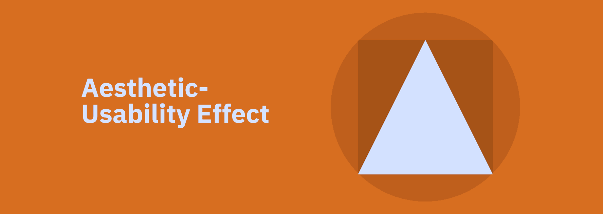
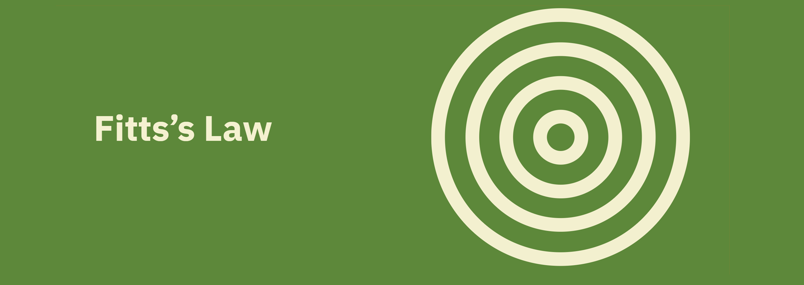
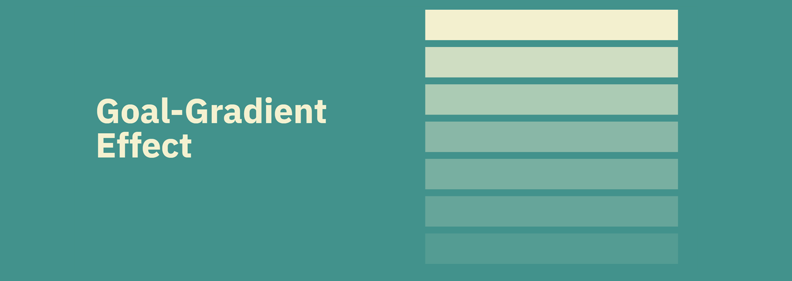
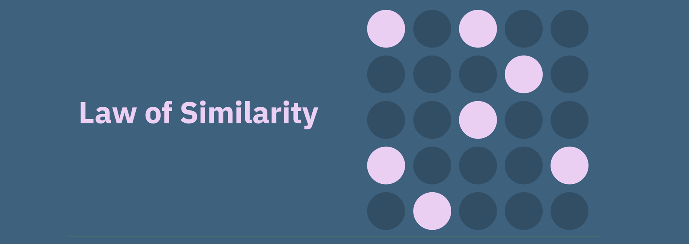
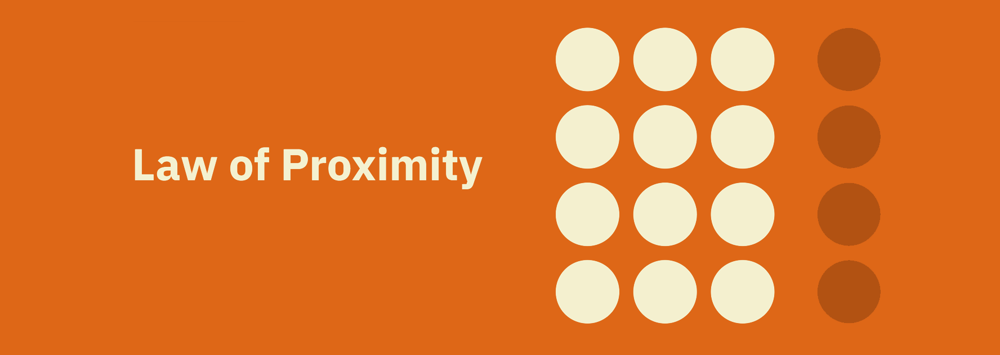

UX impacts your web form’s level of accessibility (which refers to how easily your forms can be completed and submitted by many types of people, of various backgrounds) and usability (which refers to how easily someone can accomplish their goal, which in this case means completing a form). Without great UX, you’ll not only have poor accessibility and usability but you’ll also lose out on conversions
Aesthetic-Usability Effect

An aesthetically pleasing design creates a positive response in people’s brains and leads them to believe the design actually works better.
People are more tolerant of minor usability issues when the design of a product or service is aesthetically pleasing.
Visually pleasing design can mask usability problems and prevent issues from being discovered during usability testing.
Origins
The aesthetic-usability effect was first studied in the field of human–computer interaction in 1995. Researchers Masaaki Kurosu and Kaori Kashimura from the Hitachi Design Center tested 26 variations of an ATM UI, asking the 252 study participants to rate each design on ease of use, as well as aesthetic appeal. They found a stronger correlation between the participants’ ratings of aesthetic appeal and perceived ease of use than the correlation between their ratings of aesthetic appeal and actual ease of use. Kurosu and Kashimura concluded that users are strongly influenced by the aesthetics of any given interface, even when they try to evaluate the underlying functionality of the system.
Fitts’s Law

Touch targets should be large enough for users to accurately select them.
Touch targets should have ample spacing between them.
Touch targets should be placed in areas of an interface that allow them to be easily acquired.
Origins
In 1954, psychologist Paul Fitts, examining the human motor system, showed that the time required to move to a target depends on the distance to it, yet relates inversely to its size. By his law, fast movements and small targets result in greater error rates, due to the speed-accuracy trade-off. Although multiple variants of Fitts’ law exist, all encompass this idea. Fitts’ law is widely applied in user experience (UX) and user interface (UI) design. For example, this law influenced the convention of making interactive buttons large (especially on finger-operated mobile devices)—smaller buttons are more difficult (and time-consuming) to click. Likewise, the distance between a user’s task/attention area and the task-related button should be kept as short as possible.
Goal-Gradient Effect

Providing artificial progress towards a goal will help to ensure users are more likley to have the motivation to complete that task.
The closer users are to completing a task, the faster they work towards reaching it.
Motivation can be enhanced by visually representing progress and completion, e.g. progress bars.
Origins
The goal-gradient hypothesis, originally proposed by the behaviorist Clark Hull in 1932, states that the tendency to approach a goal increases with proximity to the goal. In a classic experiment that tests this hypothesis, Hull (1934) found that rats in a straight alley ran progressively faster as they proceeded from the starting box to the food. Although the goal-gradient hypothesis has been investigated exten-sively with animals (e.g., Anderson 1933; Brown 1948; for a review, see Heilizer 1977), its implications for human behavior and decision making are understudied. Further-more, this issue has important theoretical and practical implications for intertemporal consumer behavior in reward programs (hereinafter RPs) and other types of motivational systems (e.g., Deighton 2000; Hsee, Yu, and Zhang 2003; Kivetz 2003; Lal and Bell 2003).
Grid Breakdown
Users will transfer expectations they have built around one familiar product to another that appears similar.
By leveraging existing mental models, we can create superior user experiences in which the users can focus on their tasks rather than on learning new models.
When making changes, minimize discord by empowering users to continue using a familiar version for a limited time.
Origins
Jakob’s Law was coined by Jakob Nielsen, a User Advocate and principal of the Nielsen Norman Group which he co-founded with Dr. Donald A. Norman (former VP of research at Apple Computer). Dr. Nielsen established the ‘discount usability engineering’ movement for fast and cheap improvements of user interfaces and has invented several usability methods, including heuristic evaluation.
Grid Breakdown

The human eye tends to perceive similar elements in a design as a complete picture, shape, or group, even if those elements are separated.
Elements that are visually similar will be perceived as related.
Color, shape, and size, orientation and movement can signal that elements belong to the same group and likely share a common meaning or functionality.
Ensure that links and navigation systems are visually differentiated from normal text elements.
Origins
The principles of grouping (or Gestalt laws of grouping) are a set of principles in psychology, first proposed by Gestalt psychologists to account for the observation that humans naturally perceive objects as organized patterns and objects, a principle known as Prägnanz. Gestalt psychologists argued that these principles exist because the mind has an innate disposition to perceive patterns in the stimulus based on certain rules. These principles are organized into five categories: Proximity, Similarity, Continuity, Closure, and Connectedness.
Law of Proximity

Objects that are near, or proximate to each other, tend to be grouped together.
Proximity helps to establish a relationship with nearby objects.
Proximity helps users understand and organize information faster and more efficiently.
Origins
The principles of grouping (or Gestalt laws of grouping) are a set of principles in psychology, first proposed by Gestalt psychologists to account for the observation that humans naturally perceive objects as organized patterns and objects, a principle known as Prägnanz. Gestalt psychologists argued that these principles exist because the mind has an innate disposition to perceive patterns in the stimulus based on certain rules. These principles are organized into five categories: Proximity, Similarity, Continuity, Closure, and Connectedness.